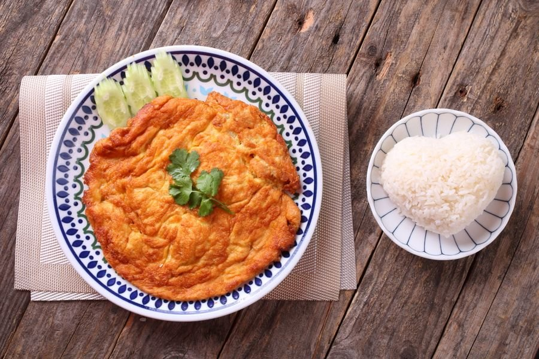
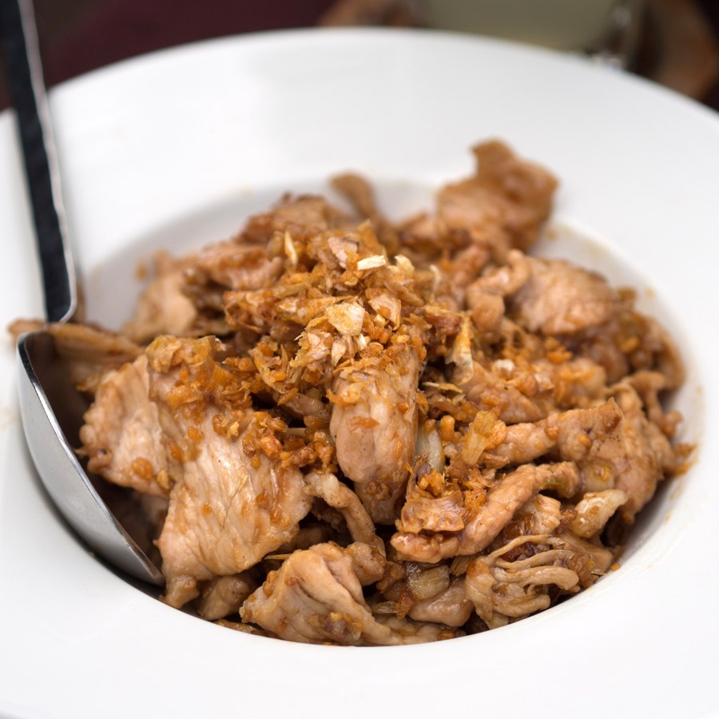
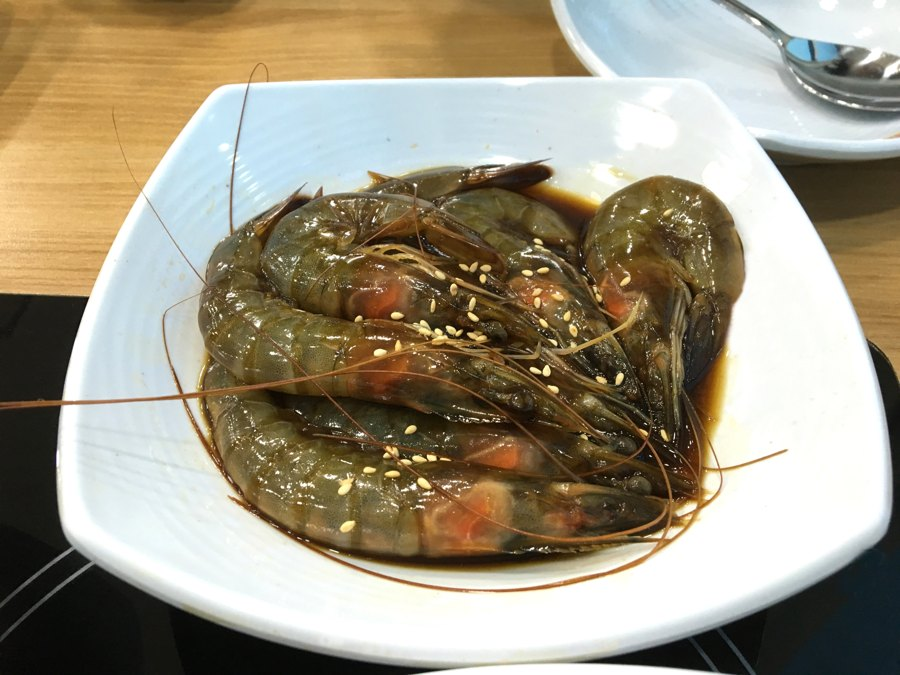

ข้าวไข่เจียว (2 ฟอง)

Illustrative Thai omelette with white rice served separately; egg count and restaurant portion are not verified.
Thai Omelette with Heart-Shaped Rice on Rustic Table โ€” UNDO KIM; Pexels License. License
3 new mappings. 136 / 222 images available; 86 unresolved. Illustrative stock photos, not restaurant photographs.

Illustrative Thai omelette with white rice served separately; egg count and restaurant portion are not verified.
Thai Omelette with Heart-Shaped Rice on Rustic Table โ€” UNDO KIM; Pexels License. License

Illustrative fried pork with garlic; rice is not pictured.
File:Mu thot krathiam.jpg โ€” Takeaway; by-sa. License

Illustrative raw soy-marinated shrimp with shells and heads; rice and restaurant toppings are not pictured.
Ganjang-saeu-jang โ€” eommina; cc0. License
| ข้าวยำไก่แซ่บ | เจริญรส แซ่บทอด อาหารตามสั่ง |
| ข้าวยำหมูทอดแซ่บ | เจริญรส แซ่บทอด อาหารตามสั่ง |
| ข้าว+ไก่กรอบสโนว์ไวท์ | เชฟต๋อย |
| ข้าว+กะเพราปลาทู | เชฟต๋อย |
| ข้าว+สะเต๊ะไก่กรอบ | เชฟต๋อย |
| ข้าวผัดไก่กรอบสไปซ์ชีส | เชฟต๋อย |
| มาม่าดำมาเลย์หม่าล่าไก่กรอบ | เชฟต๋อย |
| ผัดมักกะโรนี | เชฟต๋อย |
| สปาเกตตี้กะเพราหมูสับ | เชฟต๋อย |
| สปาเกตตี้หม่าล่าไก่กรอบ | เชฟต๋อย |
| หมี่คลุกลูกชิ้นหมู | เชฟต๋อย |
| ผัดมาม่าต้มยำลูกชิ้นจัมโบ้ | เชฟต๋อย |
| ก๋วยเตี๋ยวหมูสับซอสมะเขือเทศ | เชฟต๋อย |
| ผัดมาม่าทรงเครื่องต้มยำ | เชฟต๋อย |
| ข้าวดาวเจียว | เชฟต๋อย |
| พริกแกงหมูกรอบ ราดข้าว | เชฟต๋อย |
| ข้าว+ไก่ผัดผงกะหรี่+ไข่ดาว | เชฟต๋อย |
| คั่วเกลือไส้กรอกไก่ ราดข้าว | เชฟต๋อย |
| พริกขิงไก่กรอบ ราดข้าว | เชฟต๋อย |
| ข้าว+กะเพราลูกชิ้นหมูกากเจียว | เชฟต๋อย |
| ข้าว+หมูสับคั่วพริกเกลือ | เชฟต๋อย |
| ข้าว+หมูกรอบคั่วพริกเกลือ | เชฟต๋อย |
| ข้าวผัดหมูหวาน | เชฟต๋อย |
| ข้าวผัดรถไฟ | เชฟต๋อย |
| ข้าวของทอด ราดซอสแม็กกี้ | ช.เจริญพาณิชย์ ข้าวหน้าของทอด |
| ข้าวของทอด ราดซอสมะขาม | ช.เจริญพาณิชย์ ข้าวหน้าของทอด |
| ข้าวของทอด ราดซอสน้ำปลา | ช.เจริญพาณิชย์ ข้าวหน้าของทอด |
| อดาน่าเคบับแรปเนื้อ | แฟมิลี่ เคบับ ฮาลาล |
| ชิชเคบับแรปตับ | แฟมิลี่ เคบับ ฮาลาล |
| แรปปลาซาบะย่าง | แฟมิลี่ เคบับ ฮาลาล |
| โคฟต้าไก่+ข้าว | แฟมิลี่ เคบับ ฮาลาล |
| ข้าวหน้าหมูย่างทูโทน (สามชั้น+สันคอ) ไซส์ L | กินดัง ข้าวหน้าของย่าง |
| ข้าวหน้ากุ้งย่าง | กินดัง ข้าวหน้าของย่าง |
| ข้าวหน้าเนื้อใบพาย + ไข่ออนเซ็น พ่นไฟ ไซส์ L | กินดัง ข้าวหน้าของย่าง |
| ข้าวหน้าเนื้อพรีเมี่ยม + ไข่ออนเซ็น พ่นไฟ ไซส์ L | กินดัง ข้าวหน้าของย่าง |
| ข้าวหน้าหมูย่างทูโทน (สามชั้น+สันคอ) พ่นไฟ ไซส์ L | กินดัง ข้าวหน้าของย่าง |
| ข้าวหน้าหมูสามชั้น พ่นไฟ ไซส์ L | กินดัง ข้าวหน้าของย่าง |
| ข้าวหน้าหมูสามชั้น พ่นไฟ ไซส์ M | กินดัง ข้าวหน้าของย่าง |
| ข้าวหน้าแซลม่อนย่าง พ่นไฟ | กินดัง ข้าวหน้าของย่าง |
| ข้าวหน้ากุ้งย่าง พ่นไฟ | กินดัง ข้าวหน้าของย่าง |
| ข้าวหน้าหมูสามชั้น หม่าล่า | กินดัง ข้าวหน้าของย่าง |
| ข้าวหน้าหมูสันคอ หม่าล่า | กินดัง ข้าวหน้าของย่าง |
| ข้าวหน้าปลาซาบะย่าง หม่าล่า | กินดัง ข้าวหน้าของย่าง |
| ข้าวหน้าเนื้อพรีเมี่ยม + ไข่ออนเซ็น หม่าล่า | กินดัง ข้าวหน้าของย่าง |
| ข้าวหน้ากุ้งย่าง หม่าล่า | กินดัง ข้าวหน้าของย่าง |
| ข้าวหน้าแซลม่อนย่าง หม่าล่า | กินดัง ข้าวหน้าของย่าง |
| ข้าวหน้าน้ำจิ้มสุกี้ | เฮง เฮง สุกี้ มฟล. |
| สุกี้แห้งผัก | เฮง เฮง สุกี้ มฟล. |
| สุกี้แห้งไก่ | เฮง เฮง สุกี้ มฟล. |
| สุกี้แห้งหมู | เฮง เฮง สุกี้ มฟล. |
| สุกี้แห้งเบคอน | เฮง เฮง สุกี้ มฟล. |
| สุกี้แห้งหมึกกรอบ | เฮง เฮง สุกี้ มฟล. |
| สุกี้แห้งทะเล | เฮง เฮง สุกี้ มฟล. |
| สุกี้แห้งกุ้ง | เฮง เฮง สุกี้ มฟล. |
| สุกี้น้ำรวมมิตร | เฮง เฮง สุกี้ มฟล. |
| สุกี้น้ำหมึกกรอบ | เฮง เฮง สุกี้ มฟล. |
| สุกี้น้ำหมึก | เฮง เฮง สุกี้ มฟล. |
| สุกี้น้ำกุ้ง | เฮง เฮง สุกี้ มฟล. |
| สามชั้นทอดรสแซ่บ + เต้าหู้หมูสับ ราดข้าว | จงหัวอาหมิง |
| สามชั้นทอดรสแซ่บ + มะเขือเทศผัดไข่ ราดข้าว | จงหัวอาหมิง |
| สามชั้นทอดรสแซ่บ + มะเขือยาวหมูสับ ราดข้าว | จงหัวอาหมิง |
| สามชั้นทอดรสแซ่บ + มะระผัดไข่ ราดข้าว | จงหัวอาหมิง |
| หมูทอดรสแซ่บ + ผัดผักบุ้ง ราดข้าว | จงหัวอาหมิง |
| หมูทอดรสแซ่บ + ผัดผักกาดขาว ราดข้าว | จงหัวอาหมิง |
| มันฝรั่งผัดหมู ราดข้าว | จงหัวอาหมิง |
| ผักกาดดองผัดหมูสับ ราดข้าว | จงหัวอาหมิง |
| สามชั้นทอดเห็ด ราดข้าว | จงหัวอาหมิง |
| หมูทอดรสแซ่บ ราดข้าว | จงหัวอาหมิง |
| ปีกไก่ทอดรสแซ่บ ราดข้าว | จงหัวอาหมิง |
| มาม่าไก่กรอบเกาหลี | ลิตเติ้ลกรินทร์ |
| ข้าวไก่กรอบเกาหลีมาโย | ลิตเติ้ลกรินทร์ |
| ข้าวไก่กรอบสไปซี่มาโย | ลิตเติ้ลกรินทร์ |
| ข้าวไก่กรอบชีส | ลิตเติ้ลกรินทร์ |
| ข้าวไก่กรอบเกาหลี x ชีส | ลิตเติ้ลกรินทร์ |
| ข้าวไก่กรอบครีมหัวหอม | ลิตเติ้ลกรินทร์ |
| ข้าวไก่กรอบครีมหัวหอม x ซอสเกาหลี | ลิตเติ้ลกรินทร์ |
| ข้าวไก่กรอบผงวิงค์แซ่บ | ลิตเติ้ลกรินทร์ |
| ข้าวไก่กรอบโนริสาหร่าย | ลิตเติ้ลกรินทร์ |
| ข้าวไก่สไปซี่ | สเต็กลุงหยิกเชียงราย |
| ไวไวผัดฉ่าทะเล | สเต็กลุงหยิกเชียงราย |
| แซนด์วิชไก่น้ำพริกเผา | แซนด์วิชไส้ทะลัก จูเซโย |
| แซนด์วิชเห็ดน้ำพริกเผา | แซนด์วิชไส้ทะลัก จูเซโย |
| ย่างให้หมูกระทะชากาเกาหลี | ย่างให้ MFU |
| ย่างให้หมูกระทะชากาเกาหลี ไซส์ M | ย่างให้ MFU |
| ย่างให้หมูกระทะหม่าล่าเสฉวน | ย่างให้ MFU |
| ย่างให้หมูกระทะหม่าล่าเสฉวน ไซส์ M | ย่างให้ MFU |